跑步时脚的落地方式一般有三种：后脚跟着地、足弓处着地、前脚掌着地(如下图所示)。
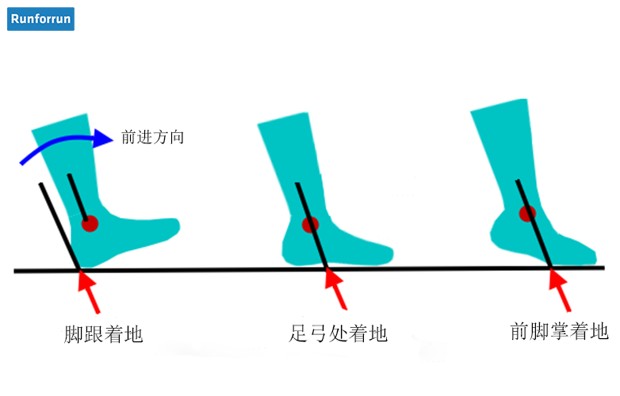
运动力学领域的学术杂志《Gait & Posture》上的一篇研究文章指出，在一项对900名初级跑者进行的研究中,
绝大多数人在跑步时后脚跟首先落地。
研究者发现,在456名男性研究对象中,96.9%为脚后跟先落地。在447名女性研究对象中,99.3%为脚后跟先落地。
因此，下面主要针对后脚跟着地方式进行介绍。
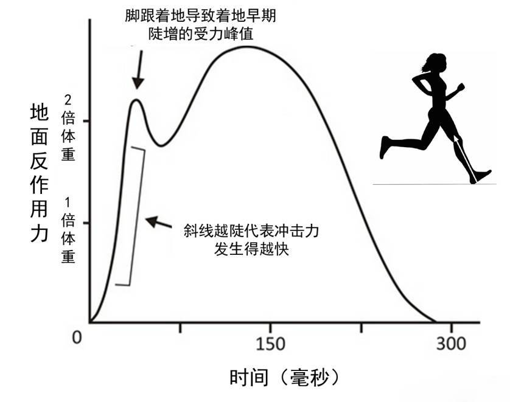
上图的曲线描绘出了从后脚跟着地至脚掌离开面过程中地面反作用力的变化，很明显看到有两个峰值。第一个峰值是脚后跟接触地面的瞬间，
地面给脚和小腿的反作用力，冲击力峰值基本上反映出了此时地面对脚和小腿冲击力的大小，也是造成损伤的主要原因。当我们后脚跟着地时
，在很短的时间内（小于0.05秒），几倍于体重的地面反作用力施加在脚跟和脚踝上，尤其是不恰当的跑步姿势使得着地时膝关节伸直，
其附近肌肉难以参与缓冲，只能靠软组织（脂肪垫、关节软骨、半月板）来应对冲击。
这仅仅是一次着地带来的效应，跑步时成千上万次的冲击不断累积，势必使得膝关节承受很大压力，这是为什么膝伤成为大众跑者头号伤痛的
重要诱因之一。很多保护不周的跑步爱好者下半生都承受着巨大的膝盖伤痛折磨，甚至连走路都需要扶着东西才能动。
因此，以前没有经过专业训练的，现在跑量比较大的人，需要跑鞋来进行缓冲。就像杯子直接落在地上很容易摔碎，而包上一层海绵后，缓冲 时间变长，就不容易摔碎。慢跑鞋就是类似的原理。慢跑鞋往往有一个比较厚的鞋底，同时采用特殊的鞋底材料与结构来帮助我们进行缓冲。 比如Asics的Gel缓震胶、New Balance的Abzorb泡沫聚酯、Mizuno的Wave波浪板缓震片，都能减少跑步时对膝关节的冲击。因此， 跑鞋不是为了让你跑得更快，而是为了让你跑步的时候不受伤。这就是跑鞋存在的意义。
跑鞋简单归纳一下常见的分类有慢跑鞋、越野鞋、马拉松鞋 、赤足鞋等等。
(1)慢跑鞋适合日常平路跑步，鞋底一般较厚，提供比较好的保护性。
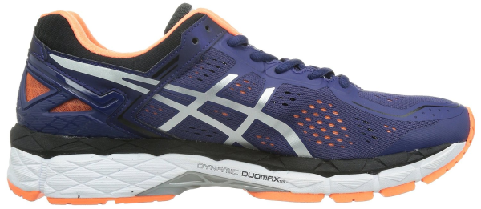(2) 越野型的跑鞋由于其针对性，鞋底构造与传统跑鞋不同，作为日常公路跑步或者比赛用鞋并不适合。
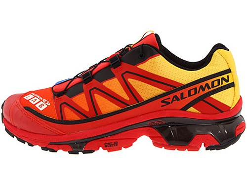(3)马拉松鞋和赤足型跑鞋在设计上为了追求速度强调轻量化，而保护性方面就薄弱些，需要有强 壮的腿部和足部力量才能驾驭，比较适用于之前提到的前脚掌着地的跑法，适用于有训练基础的跑者，而且使用寿命相对较短。
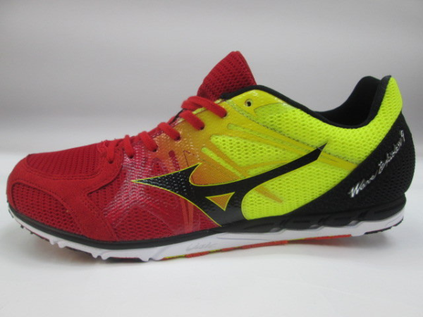 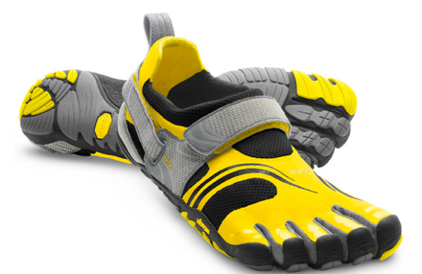慢跑鞋可分为缓冲/减震、支撑/稳定型、控制型三种。对应的跑步姿势分别为足内翻，足外翻，严重内翻（一般对应于高足弓、低足弓、扁平足）。 足内翻、足外翻、正常三种跑步姿态可以参考下面三张图。（如果你觉得这部分比较抽象的直接跳过就好，并不影响你选鞋。）
(1) 足内翻=脚背向外翻=脚心向内翻=缓冲/减震系跑鞋=underpronation=supination
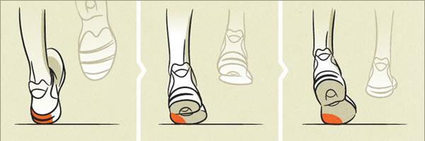(2) 足外翻=脚背向内翻=脚心向外翻=支撑/稳定系跑鞋=overpronation
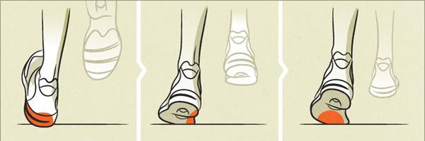(3) 正常=随意=neutral pronation
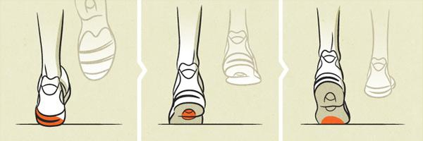一般来说可以用高低足弓来判断选哪种跑鞋，见下图。
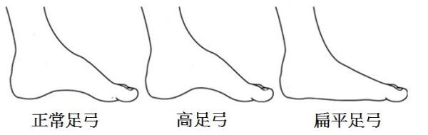
哈哈，前面介绍了那么多，你是否已经看晕了呢？
没关系，抛开前面那些烦人的内翻外翻之类的概念吧。采用下面方法很快可以很快确定适合的跑鞋。
在 Mizuno官方测试分析网站
上有详细的在线测试，可以帮助你找到适合自己的鞋子。如果你对在线评测不放心的话还可以去提供脚型测试的
实体店检测脚型，比如Asics北京世纪城店就能提供详细的脚型测试报告，并能推荐适合你的Asics跑鞋。
这并不意味着要买Mizuno或者Asics的跑鞋，找到适合你的跑鞋型号后可以在
跑鞋矩阵
中找到各个品牌同类型同量级的鞋。当然这两个品牌在跑鞋领域都十分专业，还是很推荐的。
选好跑鞋后就是去买啦。实体店可能会有些溢价，有条件的推荐海淘。当然电商网站有优惠时也可以赶紧剁手。 当然，拿到新鞋后当然要出 去跑跑跑啊~ (end)
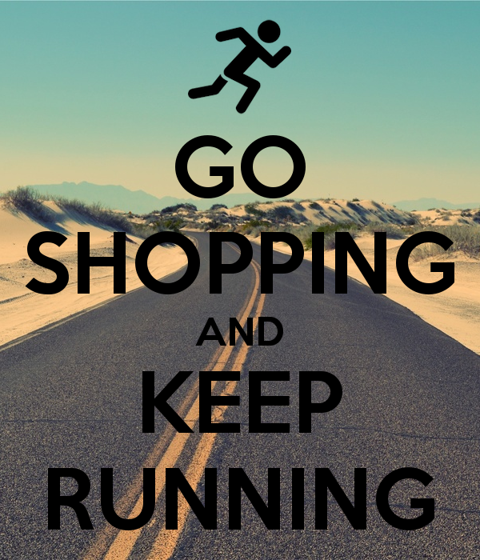| 落地姿势 | 能力要求 | 装备要求 | 状态 | 习惯 |
| 前脚掌 | ★★★ | ★☆☆ | 高配速 | 怎么舒服怎么来 |
| 全脚掌 | ★★☆ | ★★☆ | 中高配速 | 怎么舒服怎么来 |
| 后脚跟 | ★☆☆ | ★★★ | 慢跑 | 怎么舒服怎么来 |